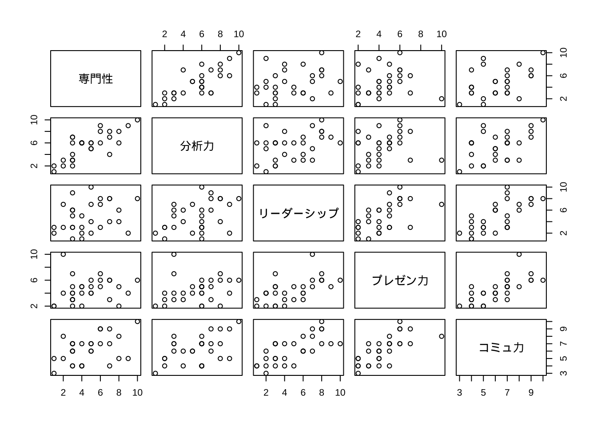
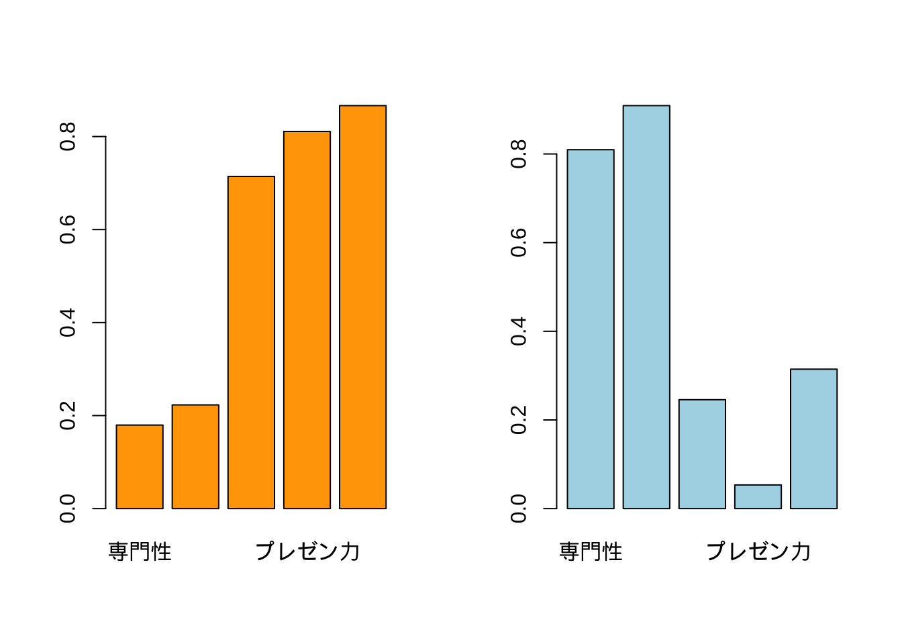
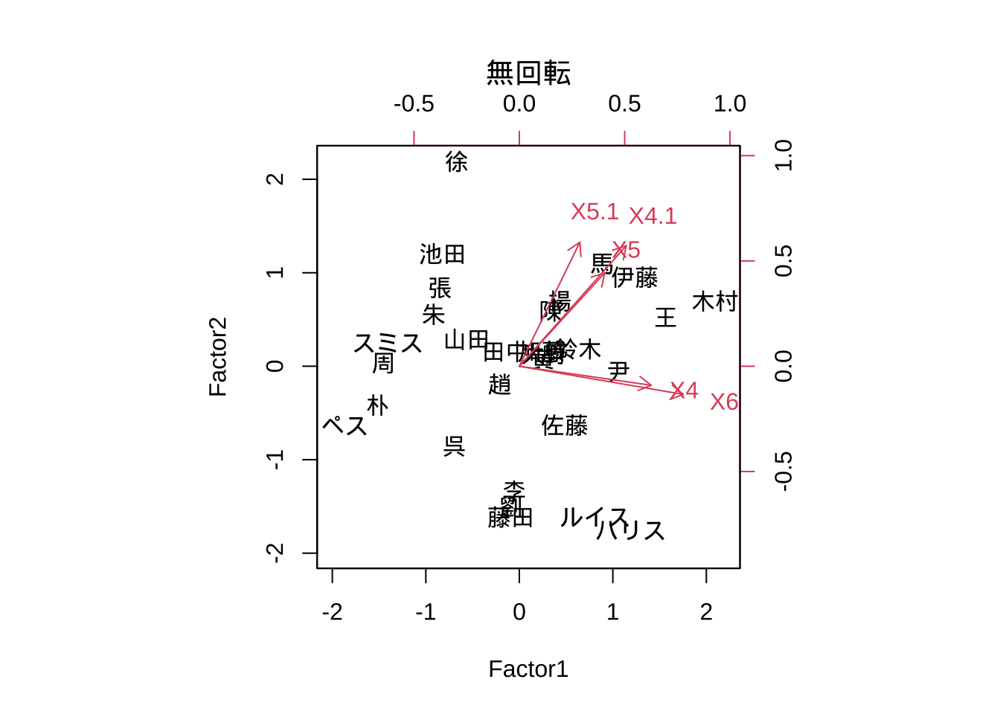
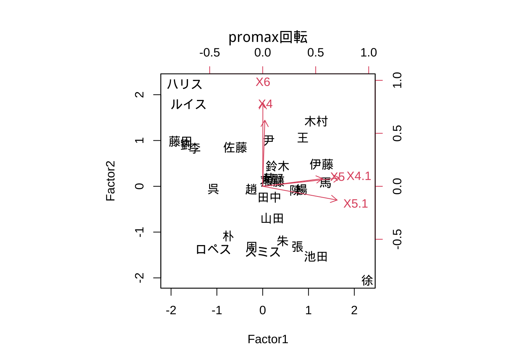
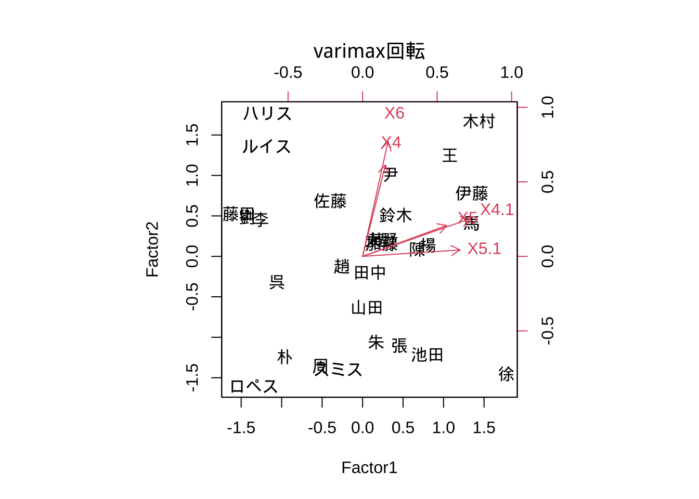
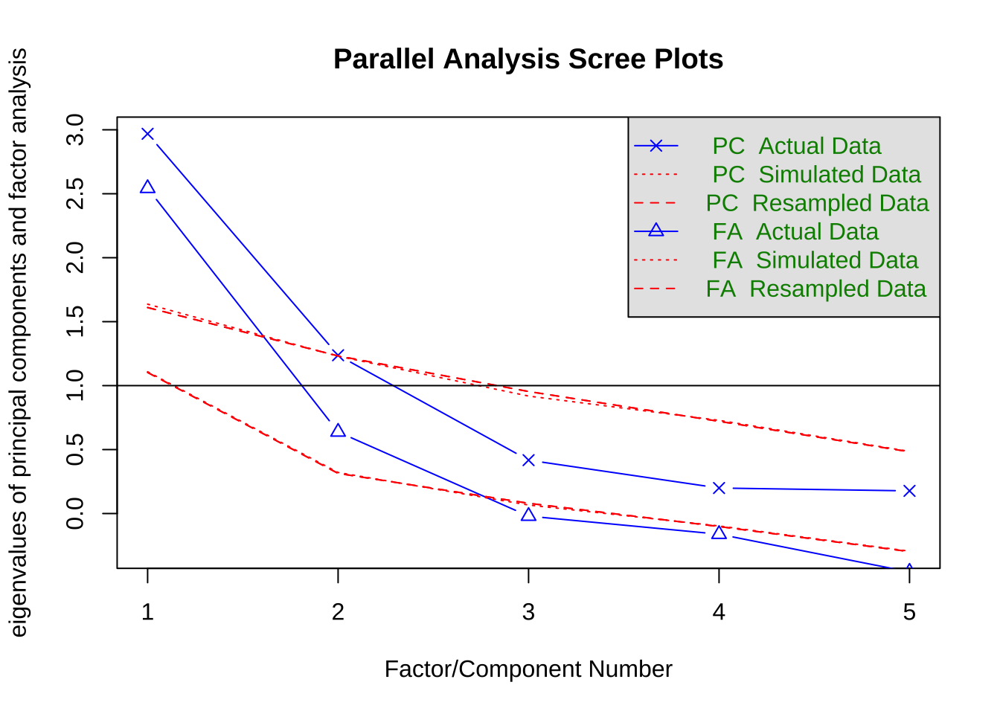
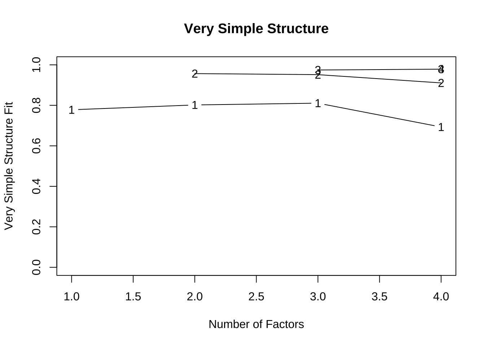
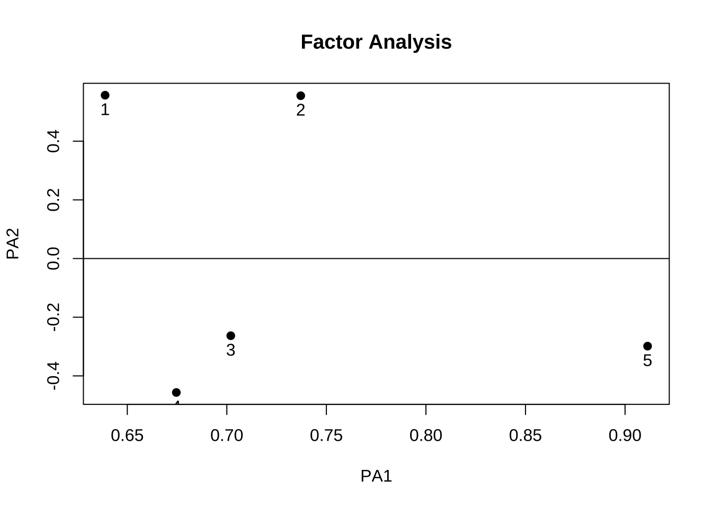

10 探索的因子分析
10.1 基本操作
データセット1: 従業員評価データ (仮想)
"selfeval30_jp.csv" (日本語版)
- 氏名/Name
- 専門性/Expertise (0-100)
- 分析力/Analytics (同)
- リーダーシップ/Leadership (同)
- プレゼン力/Presentation (同)
- コミュ力/Communication (同)
- n = 30, p = 5
- ※ 英語版は, "selfeval30_eg.csv"# (1) factanal: 最尤法only
tokuten <- read.csv("selfeval30_jp.csv", header = T,
row.names = 1)
# tokuten <- read.csv("selfeval30_eg.csv", header = T, row.names = 1)
# 散布図
pairs(tokuten)
Rでは, 因子分析を実行する関数としてfactanal()が標準的に用意されている.
factanal()は, 最尤法を使ってモデル推定を行う. 他の推定法を試したい場合には,
後述のパッケージpsych内のfa()を使用すると良い.
tokuten_fac <- factanal(tokuten, factors = 2) # default varimax回転
tokuten_fac
#>
#> Call:
#> factanal(x = tokuten, factors = 2)
#>
#> Uniquenesses:
#> 専門性 分析力 リーダーシップ プレゼン力 コミュ力
#> 0.312 0.124 0.429 0.340 0.150
#>
#> Loadings:
#> Factor1 Factor2
#> 専門性 0.180 0.810
#> 分析力 0.223 0.909
#> リーダーシップ 0.714 0.246
#> プレゼン力 0.811
#> コミュ力 0.866 0.315
#>
#> Factor1 Factor2
#> SS loadings 2.001 1.644
#> Proportion Var 0.400 0.329
#> Cumulative Var 0.400 0.729
#>
#> Test of the hypothesis that 2 factors are sufficient.
#> The chi square statistic is 1.13 on 1 degree of freedom.
#> The p-value is 0.288
tokuten_fac$loading
#>
#> Loadings:
#> Factor1 Factor2
#> 専門性 0.180 0.810
#> 分析力 0.223 0.909
#> リーダーシップ 0.714 0.246
#> プレゼン力 0.811
#> コミュ力 0.866 0.315
#>
#> Factor1 Factor2
#> SS loadings 2.001 1.644
#> Proportion Var 0.400 0.329
#> Cumulative Var 0.400 0.729
# 確認(各因子のloadingsベクトルの2乗和--> SS loadings))
sum(tokuten_fac$loading[, 1]^2)
#> [1] 2.000541得られた因子負荷量の解釈をしやすくするために, 棒グラフを用いることも多い.
# 因子負荷量barplot(factor loadings)
par(mfrow = c(1, 2))
barplot(tokuten_fac$loading[, 1], col = "orange")
barplot(tokuten_fac$loading[, 2], col = "lightblue")
Tips: プロット時, 日本語が文字化けする場合の対応 (特に, macユーザー):
> par(family = "HiraKakuProN-W3")
または,
> par(family = "HG明朝E")自主課題:
因子数を3に変えてfa()を実行し (引数factor=3), どのような出力になるかを確認してみよう.
因子行列の回転
# 因子（負荷量）行列の回転
# scores = "regression" ==> Thomson's score返す （デフォルト, 戻り値無)
tokuten_fac2 <- factanal(tokuten, factors = 2,
rotation = "none",
scores = "regression") # 回転なし
tokuten_fac3 <- factanal(tokuten, factors = 2,
rotation = "promax",
scores = "regression") # promax回転（斜交回転)
tokuten_fac4 <- factanal(tokuten, factors = 2,
scores = "regression") # varimax回転（直交回転)因子負荷量 (factor loadings)
# 因子負荷量 (factor loadings)
tokuten_fac2$loading
#>
#> Loadings:
#> Factor1 Factor2
#> 専門性 0.722 -0.408
#> 分析力 0.825 -0.442
#> リーダーシップ 0.660 0.367
#> プレゼン力 0.582 0.568
#> コミュ力 0.813 0.434
#>
#> Factor1 Factor2
#> SS loadings 2.638 1.007
#> Proportion Var 0.528 0.201
#> Cumulative Var 0.528 0.729
tokuten_fac3$loading
#>
#> Loadings:
#> Factor1 Factor2
#> 専門性 0.830
#> 分析力 0.926
#> リーダーシップ 0.717
#> プレゼン力 0.869 -0.154
#> コミュ力 0.866 0.114
#>
#> Factor1 Factor2
#> SS loadings 2.019 1.589
#> Proportion Var 0.404 0.318
#> Cumulative Var 0.404 0.722
tokuten_fac4$loading
#>
#> Loadings:
#> Factor1 Factor2
#> 専門性 0.180 0.810
#> 分析力 0.223 0.909
#> リーダーシップ 0.714 0.246
#> プレゼン力 0.811
#> コミュ力 0.866 0.315
#>
#> Factor1 Factor2
#> SS loadings 2.001 1.644
#> Proportion Var 0.400 0.329
#> Cumulative Var 0.400 0.729
# tokuten_fac$loading自主課題: 回転の掛け方の違いによる, 因子負荷量の違いを比較してみよう. 上の3つの方法の中では, どれが最も望ましいと言えるか.
バイプロット
# 因子得点と因子負荷量のbiplot
# biplot(tokuten_fac2$scores, tokuten_fac2$loading)
# biplot(tokuten_fac3$scores, tokuten_fac3$loading)
# biplot(tokuten_fac4$scores, tokuten_fac4$loading)
biplot(tokuten_fac2$scores, tokuten_fac2$loading,
family = "HiraKakuProN-W3", main = "無回転") # 日本語文字化け対応 (mac)
biplot(tokuten_fac3$scores, tokuten_fac3$loading,
family = "HiraKakuProN-W3", main = "promax回転") # 日本語文字化け対応 (mac)
biplot(tokuten_fac4$scores, tokuten_fac4$loading,
family = "HiraKakuProN-W3", main = "varimax回転") # 日本語文字化け対応 (mac)
独自因子
# 独自因子（共通因子で説明出来なかった変動の割合)
tokuten_fac$uniquenesses # specific variance
#> 専門性 分析力 リーダーシップ プレゼン力 コミュ力
#> 0.3122369 0.1238380 0.4294971 0.3395409 0.1502496因子得点 (factor scores)
# 因子得点(factor scores)
tokuten_fac2$scores
#> Factor1 Factor2
#> 金 -0.35345980 -0.608456362
#> 加藤 0.17945003 0.124563978
#> 伊藤 1.45174808 0.575307941
#> 山田 -0.42356834 0.498259301
#> 鈴木 0.55483188 0.312476238
#> 馬 1.26102603 0.583836680
#> 王 1.54109037 0.083053116
#> 劉 -0.69689211 -1.114352717
#> 趙 -0.25800514 -0.210834640
#> 呉 -0.70810831 -0.750978809
#> 尹 1.04536346 -0.254942740
#> 佐藤 0.09700760 -0.475101973
#> ルイス 0.28088421 -1.810422048
#> 徐 0.14982464 2.469057128
#> スミス -1.21124653 0.675513625
#> 木村 2.25572532 -0.242759239
#> 大野 0.31595701 -0.075091179
#> ロペス -2.05457156 0.093522072
#> 陳 0.60199657 0.605075906
#> 李 -0.54192120 -0.949786482
#> 張 -0.51872657 0.831038283
#> 黄 0.22507377 -0.077584334
#> 朴 -1.49527174 0.009933262
#> 池田 -0.34529174 1.359825911
#> 藤田 -0.71155444 -1.333684989
#> 周 -1.40767534 0.451195043
#> ハリス 0.58928507 -1.976037558
#> 田中 0.01337208 0.250000173
#> 朱 -0.61845621 0.768688699
#> 楊 0.78211294 0.188685714
tokuten_fac3$scores
#> Factor1 Factor2
#> 金 -0.783798224 0.335754006
#> 加藤 0.218967961 -0.001191321
#> 伊藤 1.351662948 0.387409265
#> 山田 0.252293375 -0.724666432
#> 鈴木 0.606480686 0.063030681
#> 馬 1.255742444 0.259283499
#> 王 0.922595728 0.895755121
#> 劉 -1.462553130 0.583660747
#> 趙 -0.345637420 0.030858914
#> 呉 -1.115919132 0.242931675
#> 尹 0.323632449 0.893436307
#> 佐藤 -0.408227394 0.497430641
#> ルイス -1.604090543 1.839515824
#> 徐 2.478806745 -2.172621111
#> スミス -0.005973431 -1.384237779
#> 木村 0.996736144 1.645663657
#> 大野 0.099723541 0.268234009
#> ロペス -1.031715491 -1.381757963
#> 陳 0.916303486 -0.175889845
#> 李 -1.218125203 0.530299056
#> 張 0.523364581 -1.090247794
#> 黄 0.047649527 0.213200254
#> 朴 -0.807292119 -0.952237133
#> 池田 1.131464854 -1.466396505
#> 藤田 -1.683490718 0.775806481
#> 周 -0.331059046 -1.302159553
#> ハリス -1.596375924 2.186104544
#> 田中 0.250004937 -0.221119206
#> 朱 0.408348994 -1.095900308
#> 楊 0.610479374 0.320050269
tokuten_fac4$scores
#> Factor1 Factor2
#> 金 -0.68882679 0.14377283
#> 加藤 0.21259422 0.05022145
#> 伊藤 1.39824818 0.69530836
#> 山田 0.08750758 -0.64808556
#> 鈴木 0.60326556 0.20383935
#> 馬 1.27711654 0.54774562
#> 王 1.09181566 1.09077766
#> 劉 -1.29466551 0.22645486
#> 趙 -0.32926874 -0.05099018
#> 呉 -1.03187860 -0.02476107
#> 尹 0.50907297 0.94795848
#> 佐藤 -0.28855058 0.38970620
#> ルイス -1.15888407 1.41898261
#> 徐 1.93666662 -1.53883492
#> スミス -0.30711875 -1.35244773
#> 木村 1.32712114 1.84010279
#> 大野 0.15532636 0.28520385
#> ロペス -1.30367841 -1.59073357
#> 陳 0.85243022 0.04335245
#> 李 -1.06867838 0.23173147
#> 張 0.27143201 -0.94128983
#> 黄 0.09272705 0.21926975
#> 朴 -0.99202641 -1.11884756
#> 池田 0.78067414 -1.16571900
#> 藤田 -1.46760861 0.36214683
#> 周 -0.60526047 -1.34862397
#> ハリス -1.07594164 1.75907104
#> 田中 0.19489202 -0.15714961
#> 朱 0.15839769 -0.97379699
#> 楊 0.66309899 0.4556343710.2 パッケージpsychの利用
パッケージpsych内に収録されている関数fa()では, モデル推定方法や因子負荷行列の回転方法等に選択肢がある.
- モデル推定方法 (引数fm=): 最尤法 ("ml"), 一般化最小2乗法 ("gls"), 重み付き最小2乗法 ("gls"), 最小残差法 ("mires"). デフォルトは"mires"
- 回転方法 (引数rotate=): オブリミン ("oblimin"), バリマックス("varimax")など.主因子法で因子負荷量行列を推定し, 回転の掛け方の違いによる結果の比較を行う.
library(psych)
# 主因子法
tokuten_fa <- fa(r = tokuten, nfactors = 2 ,
rotate = "none", fm = "pa", scores = T) # 回転なし
tokuten_fa2 <- fa(r = tokuten, nfactors = 2 ,
rotate = "oblimin", fm = "pa", scores = T) #
# tokuten_fa <- fa(r = tokuten, nfactors = 2 , rotate = "none", fm = "ml", scores = T)
# デフォルト: rotate = "oblimin", fm = "minres"
# 最尤法, fm = "ml", 一般化最小2乗法, "gls", 重み付き最小2乗法"gls", 最小残差法"mires"
# PCAとの比較
# tokuten_fa # standardized loadings (pattern matrix)表示- 無回転のケース
summary(tokuten_fa)
#>
#> Factor analysis with Call: fa(r = tokuten, nfactors = 2, rotate = "none", scores = T, fm = "pa")
#>
#> Test of the hypothesis that 2 factors are sufficient.
#> The degrees of freedom for the model is 1 and the objective function was 0.05
#> The number of observations was 30 with Chi Square = 1.17 with prob < 0.28
#>
#> The root mean square of the residuals (RMSA) is 0.02
#> The df corrected root mean square of the residuals is 0.06
#>
#> Tucker Lewis Index of factoring reliability = 0.971
#> RMSEA index = 0.067 and the 10 % confidence intervals are 0 0.506
#> BIC = -2.23
tokuten_fa$loadings
#>
#> Loadings:
#> PA1 PA2
#> 専門性 0.653 0.559
#> 分析力 0.733 0.531
#> リーダーシップ 0.702 -0.277
#> プレゼン力 0.664 -0.459
#> コミュ力 0.878 -0.291
#>
#> PA1 PA2
#> SS loadings 2.669 0.967
#> Proportion Var 0.534 0.193
#> Cumulative Var 0.534 0.727
tokuten_fa$scores
#> PA1 PA2
#> 金 -0.50097984 0.42995050
#> 加藤 0.20061318 -0.15893523
#> 伊藤 1.51349352 -0.39976949
#> 山田 -0.34154665 -0.58422408
#> 鈴木 0.54024756 -0.47035034
#> 馬 1.35988787 -0.29538763
#> 王 1.51778205 0.02683852
#> 劉 -0.90563580 0.79837065
#> 趙 -0.26181220 0.23944774
#> 呉 -0.78988691 0.88028830
#> 尹 0.96526732 0.39864415
#> 佐藤 -0.02613999 0.23031360
#> ルイス -0.01428384 1.86567555
#> 徐 0.53763371 -2.38807728
#> スミス -1.06973521 -0.80247967
#> 木村 2.21278411 0.68791627
#> 大野 0.32716812 0.20696590
#> ロペス -2.00637270 -0.38991235
#> 陳 0.66251396 -0.53105722
#> 李 -0.71971022 0.75052896
#> 張 -0.33955651 -0.83954685
#> 黄 0.22505320 0.11009970
#> 朴 -1.44406138 -0.12219658
#> 池田 -0.09426028 -1.30113136
#> 藤田 -0.93230480 1.09856826
#> 周 -1.30063403 -0.69601446
#> ハリス 0.25974096 2.09973398
#> 田中 0.04686464 -0.19837776
#> 朱 -0.47461910 -0.80750067
#> 楊 0.85248925 0.16161887- oblimin回転のケース
summary(tokuten_fa2)
#>
#> Factor analysis with Call: fa(r = tokuten, nfactors = 2, rotate = "oblimin", scores = T,
#> fm = "pa")
#>
#> Test of the hypothesis that 2 factors are sufficient.
#> The degrees of freedom for the model is 1 and the objective function was 0.05
#> The number of observations was 30 with Chi Square = 1.17 with prob < 0.28
#>
#> The root mean square of the residuals (RMSA) is 0.02
#> The df corrected root mean square of the residuals is 0.06
#>
#> Tucker Lewis Index of factoring reliability = 0.971
#> RMSEA index = 0.067 and the 10 % confidence intervals are 0 0.506
#> BIC = -2.23
#> With factor correlations of
#> PA1 PA2
#> PA1 1.00 0.43
#> PA2 0.43 1.00
tokuten_fa2$loadings
#>
#> Loadings:
#> PA1 PA2
#> 専門性 0.872
#> 分析力 0.883
#> リーダーシップ 0.728
#> プレゼン力 0.859 -0.143
#> コミュ力 0.862 0.127
#>
#> PA1 PA2
#> SS loadings 2.015 1.580
#> Proportion Var 0.403 0.316
#> Cumulative Var 0.403 0.719
tokuten_fa2$scores
#> PA1 PA2
#> 金 -0.63719993 -0.12126216
#> 加藤 0.24946885 0.05684763
#> 伊藤 1.53828937 0.92948821
#> 山田 -0.05705539 -0.63216871
#> 鈴木 0.69002640 0.12657088
#> 馬 1.35472194 0.87511839
#> 王 1.35867014 1.20002358
#> 劉 -1.16097601 -0.20597088
#> 趙 -0.33934743 -0.05413001
#> 呉 -1.09171502 -0.06443027
#> 尹 0.69995489 1.00216931
#> 佐藤 -0.12266000 0.12387160
#> ルイス -0.81535148 1.15737049
#> 徐 1.51251121 -1.07657321
#> スミス -0.62056974 -1.33653847
#> 木村 1.70175981 2.15586958
#> 大野 0.20633950 0.38467617
#> ロペス -1.64359318 -1.80831273
#> 陳 0.82651628 0.18386404
#> 李 -0.97254981 -0.09099336
#> 張 0.05455960 -0.79053044
#> 黄 0.15581651 0.24440165
#> 朴 -1.25110204 -1.20227775
#> 池田 0.47454136 -0.88840395
#> 藤田 -1.31417180 -0.03874208
#> 周 -0.87481150 -1.44985872
#> ハリス -0.66864130 1.51758637
#> 田中 0.12763357 -0.08771334
#> 朱 -0.08115492 -0.87574980
#> 楊 0.70009011 0.76579801par(mfrow = c(1, 2))
# plot(tokuten_fa)
# plot(tokuten_fa2)
biplot(tokuten_fa, main = "無回転")
biplot(tokuten_fa2, main = "oblimin回転")
自主課題: 因子数や回転の掛け方を色々と変えてみて, 最も望ましい組合せをみつけてみよう.
10.3 因子分析に有用なツール
因子数の決定
パッケージpsychの関数fa.parallel(), vss()は, 因子数の決定に有用である.
平行分析 (parallel analysis)
# library(psych)
# 平行分析(parallel analysis)
# デフォルト: fm = "minres"
(res_parallel <- fa.parallel(tokuten)) # minres法(デフォルト), PCA & 因子分析
# fa.parallel(tokuten, fm = "wls")
# fa.parallel(tokuten, fm = "ml", fa = "fa") # 最尤法+因子分析(のみ)実行
# サンプルデータから作られるscreeプロットと, シミュレーションデータの行列(サンプルと同じサイズ)のscreeプロットとを比較
# → 因子数をsuggest
# fa = "both" (デフォルト): # PCA, 主因子法の固有値を同時に表示
#> Parallel analysis suggests that the number of factors = 2 and the number of components = 1
#> Call: fa.parallel(x = tokuten)
#> Parallel analysis suggests that the number of factors = 2 and the number of components = 1
#>
#> Eigen Values of
#> Original factors Resampled data Simulated data Original components
#> 1 2.48 1.03 1.04 2.93
#> 2 0.63 0.28 0.29 1.23
#> Resampled components Simulated components
#> 1 1.57 1.58
#> 2 1.21 1.20VSS (Very Simple Structure) 基準
# VSS (Very Simple Structure) 基準
# Very Simple Structure criterion ( VSS) for estimating the optimal number of factors
# 最大となる因子数を探す
# (tokuten_vss <- vss(tokuten, n = 5, rotate = "oblimin", fm = "wls") ) # n: Number of factors to extract (> (初期仮説の)因子数)
# デフォルト: # 因子数 n = 8, 回転 rotate = "varimax"
# → VSS, MAP, その他の因子数決定基準の数値を表示
tmp_vss <- vss(tokuten, n = 4, fm = "ml")
# VSS.plot(tmp_vss)
print(tmp_vss)
#>
#> Very Simple Structure
#> Call: vss(x = tokuten, n = 4, fm = "ml")
#> VSS complexity 1 achieves a maximimum of 0.81 with 3 factors
#> VSS complexity 2 achieves a maximimum of 0.96 with 2 factors
#>
#> The Velicer MAP achieves a minimum of 0.19 with 2 factors
#> BIC achieves a minimum of -2.27 with 2 factors
#> Sample Size adjusted BIC achieves a minimum of 0.84 with 2 factors
#>
#> Statistics by number of factors
#> vss1 vss2 map dof chisq prob sqresid fit RMSEA BIC SABIC complex
#> 1 0.78 0.00 0.22 5 2.2e+01 0.00057 2.31 0.78 0.333 4.8 20.36 1.0
#> 2 0.80 0.96 0.19 1 1.1e+00 0.28840 0.44 0.96 0.056 -2.3 0.84 1.1
#> 3 0.81 0.92 0.38 -2 1.2e-08 NA 0.31 0.97 NA NA NA 1.2
#> 4 0.49 0.83 1.00 -4 3.0e-13 NA 0.23 0.98 NA NA NA 1.8
#> eChisq SRMR eCRMS eBIC
#> 1 2.1e+01 1.9e-01 0.265 4.0
#> 2 2.7e-01 2.1e-02 0.067 -3.1
#> 3 2.6e-09 2.1e-06 NA NA
#> 4 1.7e-13 1.7e-08 NA NA